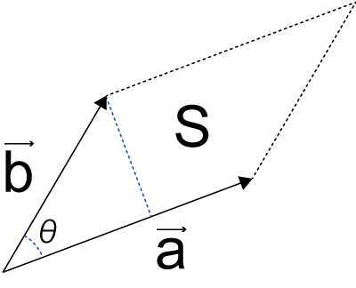
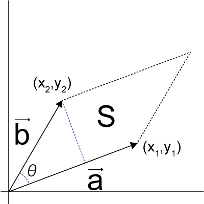
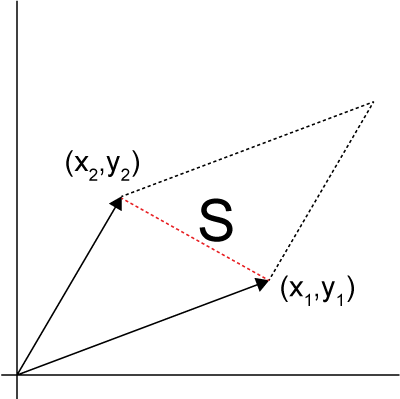
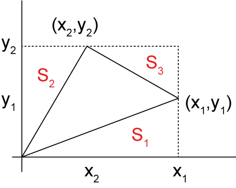
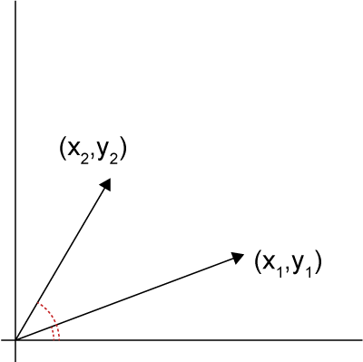

外積-01
外積，中高で習ったと思いますが，結構ややこしい計算でした．あまり実用的と感じたこともないですし．
しかし，回転運動の解析における回転方向の算出にはとても便利な巻数です．
・外積とは，
外積とは，
二つのベクトルが作る平行四辺形の面積
ですね（ちゃんとした定義は違うかもしれませんが．．．）

ベクトルをそれぞれ，\( \Large \vec{a}, \ \vec{b} \)，とし，二つのベクトルのなす角をθ，とすると，平行四辺形の面積，S，は，
\( \Large S = |a| \ |b| \ sin \theta \)
となります．

原点からのベクトルを考え，それぞれの座標を，(x1,y1)，(x2,y2)とすると，外積は，
\( \Large S = |a| \ |b| \ sin \theta = x_1\ y_2-x_2 \ y_1 \)
となります．
これはよく見ると，

平行四辺形の面積は，
(0,0)，(x1,y1)，(x2,y2)の三角形の面積の2倍
となることがわかります．
・三角形の面積の求め方

この三角形の面積は，上図の長方形から三つの三角形を引けばいいので，
\( \Large S_1 = \frac{1}{2} x_1\ y_1 \)
\( \Large S_2 = \frac{1}{2} x_2\ y_2 \)
\( \Large S_3 = \frac{1}{2} (x_1-x_2)\ (y_2-y_1) \)
となりますので，
\( \Large \begin{eqnarray} S_{triangle} &=& x_1 \ y_2 -(S_1+ S_2+ S_3) \\
&=&
x_1 \ y_2 -\frac{1}{2} [x_1\ y_1 + x_2\ y_2 + (x_1-x_2)\ (y_2-y_1) ] \\
&=&
x_1 \ y_2 -\frac{1}{2} [x_1\ y_1 + x_2\ y_2 + x_1 \ y_2 - x_1 \ y_1 - x_2 \ y_2 + x_2 \ y_1] \\
&=&
x_1 \ y_2 -\frac{1}{2} [ x_1 \ y_2 + x_2 \ y_1] \\
&=&
\frac{1}{2} [ x_1 \ y_2 - x_2 \ y_1] \\
\end{eqnarray} \)
となるので，平行四辺形の面積は，
\( \Large S = 2 \ S_{triangle} = x_1 \ y_2 - x_2 \ y_1 \)
となりました．当初は，二つのベクトルからの垂線の式を計算して．．．と行っていたのですが，結構な計算量でした．調べていくと三角形の面積の式がよく似ていたので，簡単に導出することができました．
・外積の極性
外積の値の正負から回転の方向を算出してみましょう．

それぞれのベクトルの角度は，
\( \Large \theta_1 = tan \frac{y_1}{x_1}, \ \theta_2 = tan \frac{y_2}{x_2}\)
です．ここで，θ2>θ1とし，反時計回りを正の値とすると，
\( \Large tan \frac{y_1}{x_1} > tan \frac{y_2}{x_2}\)
となります．tanの性質から，
\( \Large \frac{y_1}{x_1} > \frac{y_2}{x_2}\)
\( \Large x_1 \ y_2 - x_2 \ y_1 > 0 \)
となり，外積の値は正となります．逆の場合は負の値となります．